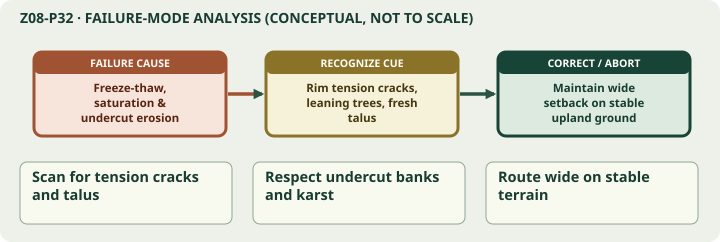

Z08-P32 · Rocks, minerals and materials · New manuscript
Karst Sinkholes, Undercut Riverbanks and Slope Failure Cues
Recognize unstable earth and rock slopes across bluffs, river cuts, and karst terrain before entering hazardous fall or slump zones.
When it applies · Southeastern Minnesota karst valleys, North Shore cliffs, and thawing spring stream banks.
Equipment · Route map, visual slope scan from stable ground.

Actions
- Watch for top-of-bank tension cracks, freshly tilted trees, seeping mud faces, and angular fresh rock debris at cliff bases signaling active slope failure.[R16]
- Stay well back from overhanging soil banks and karst sinkhole rims because root mats often bridge hollow cavities that collapse underfoot.[R16]
- Increase setback distances after heavy rainstorms, rapid snowmelt, and freeze-thaw cycles when pore water destabilizes bluffs and drift walls.[R13, R16]
Failure recognition · Standing on grassy undercut rims for a view or camping beside fresh talus exposes groups to fatal bank collapse and rockfall.[R13, R16]
Verify · Travel and camp zones maintain clear setback from cracked rims, undercut banks, and active talus aprons.[R16]
Stop or change course · Stop and reroute onto solid upland terrain whenever fresh cracks, slumping mud, or falling pebbles are noticed.[R16]
Evidence and editorial notes
- R13 · National Park Service · Rocks and Minerals Geological Overview (Current web edition)
- Section: Rocks and Minerals overview · Conditions: Unrated stones near a fire or during thermal cycling
Support: Use agency-approved fire facilities and keep people away from cracking or shifting material.
Limitations: Editorial avoidance. The cited geology overview does not establish a safe rock type, moisture test or heating threshold. · Conflicting evidence: Conditions are recorded in the A03 audit.
Editorial note: Reinforces Z03/Z08 wet-rock spalling stop. · Specialist reviewer: Geologist and fire safety reviewer
Primary source · checked 2026-11-25
Current assessment · A04-R13 (2026-11-25) · Open: support partial or missing (A04): No general authorization of heated rock or context for cracking. Retain hazard avoidance as editorial and use site fire orders and material review for prescriptions. Limits: Specialist review PENDING (Geologist and fire safety reviewer); publication HOLD. All release decisions pending. - R16 · Minnesota DNR · Rocks and Minerals of Minnesota Educational Guide (Current web edition)
- Section: Sedimentary limestone, sandstone, and shale permeability · Conditions: Southeastern Minnesota karst, bluff, and river-valley sedimentary strata
Support: Sandstone, limestone, and shale differ sharply in cementation, porosity, and fissility, governing weathering and cliff instability.
Limitations: Karst bluffs and fractured shales shed rockfall unpredictably; visual inspection cannot certify slope or load stability. · Conflicting evidence: None noted.
Editorial note: Covers Upper Midwest sedimentary rock hazards. · Specialist reviewer: Engineering geologist
Primary source · checked 2026-11-25
Source lineage · New manuscript (Z08 P16 geological hazards) · Classification · New manuscript.